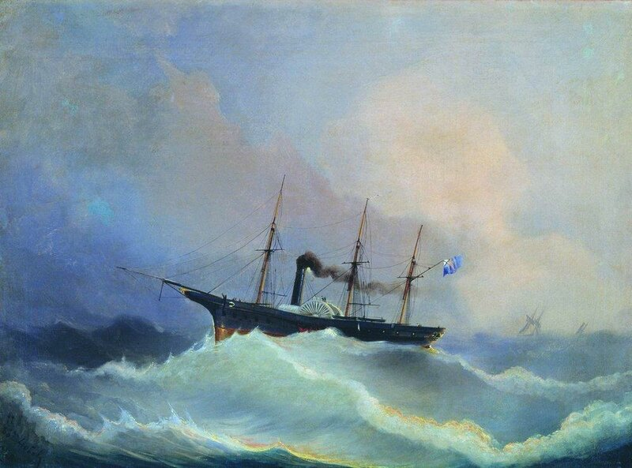

 <div style="text-align:left"><span style="font-size: medium;">Пару недель назад я <a href="http://galea-galley.livejournal.com/135445.html" target="_blank" target="_blank">привел</a> несколько строк из записок нашего художника-мариниста А.П.Боголюбова, относящихся к биографии адмирала Ивана Петровича Епанчина. Там же, в комментариях, всплыл анекдот о фамильярном разговоре Епанчина с тогдашним королем Дании.<br/><br/>Боголюбов этот эпизод излагает несколько иначе:<br/><br/><p style="margin: 0cm 0cm 0pt 6cm;"><br/> <span style="font-size: medium;">После возвращения из Пруссии в Кронштадт пароход наш скоро откомандировали в Данию, в распоряжение начальника штаба стоявшей тогда в Заненбурге русской эскадры под флагом вице-адмирала Ивана Епанчина. Эпизод этот у нас назывался Шлезвиг-Голштинским походом. Стояли там для страха кому следует десять наших кораблей. В конце концов пора пришла и им уходить. Приехал король датский, давался прощальный обед, где все очень выпили. Король просил перевести адмиралу и передать свою живейшую благодарность за стоянку в его водах, а адмирал кричал Глазенапу: &#34;Богдаша! Переведи Его Величеству, что пока Епанчин с ним, то может на обоих ушах спать покойно&#34;. Конечно, тонкий и образованный Глазенап переводил и передавал совсем другое королю, почему оба остались очень довольны своими речами. Дым и гром салюта с криками &#34;ура&#34; окрасили ещё более картину расставания.</span></p><br/><br/>Пароходом этим, о котором пишет Боголюбов, была императорская яхта &#34;Камчатка&#34;. <br/><div style="text-align:center"></div><br/><p align="center"><span style="font-size: small;">А.П.Боголюбов. 12-пушечный пароходо-фрегат &#34;Камчатка&#34;</span></p><br/><br/><br/><a name="cutid1"></a> Офицеры с яхты были все как на подбор, Боголюбов приводит ходивший среди моряков того времени стих:<br/><p style="margin: 0cm 0cm 0pt 10cm;"><br/> <span style="font-size: medium;">Ус нафабрен,<br/>    Бровь дугой,<br/>    Новые перчатки.<br/>    Это, спросят, кто такой?<br/>    Офицер с &#34;Камчатки&#34;.</span></p><br/>Восторгаясь этим кораблем, Боголюбов не очень дипломатично отзывается о его командире И.И.Шанце. Вот это место из записок, которое показывает, насколько глубоки корни казнокрадства у близких к властям предержащим офицеров  нашей армии и  флота:<br/><p style="margin: 0cm 0cm 0pt 6cm;"><br/> <span style="font-size: medium;">Пароходо-фрегат &#34;Камчатка&#34; было лучшее колёсное судно нашего флота. Три года тому назад оно было приведено из Америки, где строилось под надзором капитана 1-го ранга И.И. Шанца, который по приводе его в Россию сделался командиром. Офицеров набрали туда лучших, команду тоже выбрали из всех экипажей.<br/><br/>    &#34;Камчатка&#34; была, точно, красивое судно по линиям и пропорции, имела три мачты, все с реями, сильно, но красиво поднятыми, заострённый нос, круглую корму, которую почти всецело покрывал громадный золотой орёл. Скорость в те времена была большая - 12 узлов, как говорили, но пароход никогда не ходил с этой быстротой.<br/><br/>    Капитан Шанц был моряк практический, прекрасный, служил и в Англии, и на торговом флоте Финляндии, откуда был родом и назывался фон Шанц. Будучи сыном кузнеца, авторитет он себе отвоевал нахальством со всеми, так что его все боялись. Вор он был первоклассный, ибо, как слышно и видно было по его жизни, сильно нагрел себе лапы в Америке при постройке &#34;Камчатки&#34;, да и в походе, как говорили товарищи, везде крал - то с угля, то с продовольствия команды. Стоит &#34;Камчатка&#34; в Палермо, в гавани. Двор живёт на вилле графини Бутерра. Конечно, офицеров изредка, а командиров очень часто приглашали на вечера и обеды. Все оделись в штатское платье, а Шанц всё являлся в вицмундире или форменном сюртуке. Царица это заметила, и обер-камергер граф Шувалов сообщил её замечание капитану, на что он с полным хладнокровием отвечал: &#34;А сшейте мне фрак, так я буду его надевать&#34;. Что делать? Тогда гофмаршал прислал к нему портного и Яню (как его звала супруга) одели на дворцовый счёт.</span></p></span></div> 